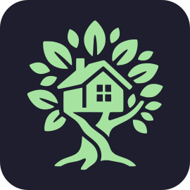

<!doctype html>
<html>
<head>
<meta charset="utf-8">
<!-- One layer of one scene, drawn over the app recording. render.mjs opens it
     as frame.html?scene=<id> and steps its animations frame by frame. The
     window hole is transparent; compose.py puts the recording under it. -->
<style>
  @font-face { font-family: Plex; src: url(../../assets/fonts/IBMPlexSans-Regular.ttf); font-weight: 400; }
  @font-face { font-family: Plex; src: url(../../assets/fonts/IBMPlexSans-Medium.ttf); font-weight: 500; }
  @font-face { font-family: Plex; src: url(../../assets/fonts/IBMPlexSans-SemiBold.ttf); font-weight: 600; }
  @font-face { font-family: Plex; src: url(../../assets/fonts/IBMPlexSans-Bold.ttf); font-weight: 700; }
  @font-face { font-family: PlexMono; src: url(../../assets/fonts/IBMPlexMono-Medium.ttf); font-weight: 500; }

  /* Catppuccin Mocha, as in src/theme.rs. */
  :root {
    --crust: #11111b; --mantle: #181825; --base: #1e1e2e;
    --surface0: #313244; --surface1: #45475a;
    --text: #cdd6f4; --subtext: #a6adc8; --overlay: #7f849c;
    --green: #a6e3a1;
    /* The app window's place in a chapter scene; compose.py reads it back. */
    --win-x: 720px; --win-y: 190px; --win-w: 1120px; --win-h: 700px; --win-r: 14px;
  }
  html, body { margin: 0; width: 1920px; height: 1080px; overflow: hidden; background: transparent; }
  body { font-family: Plex, sans-serif; color: var(--text); -webkit-font-smoothing: antialiased; }

  .bg {
    position: absolute; inset: 0;
    background:
      radial-gradient(900px 600px at 78% 52%, rgba(166, 227, 161, 0.10), transparent 70%),
      linear-gradient(rgba(205, 214, 244, 0.035) 1px, transparent 1px) 0 0 / 48px 48px,
      linear-gradient(90deg, rgba(205, 214, 244, 0.035) 1px, transparent 1px) 0 0 / 48px 48px,
      var(--base);
  }
  .chapter .bg { -webkit-mask-image: var(--hole); mask-image: var(--hole); }

  .window {
    position: absolute; left: var(--win-x); top: var(--win-y); width: var(--win-w); height: var(--win-h);
    border-radius: var(--win-r); box-sizing: border-box;
    border: 1px solid rgba(205, 214, 244, 0.14);
    box-shadow: 0 40px 120px rgba(0, 0, 0, 0.55), 0 0 0 1px rgba(17, 17, 27, 0.8);
  }
  .copy { position: absolute; left: 120px; top: 0; bottom: 0; width: 540px; display: flex; flex-direction: column; justify-content: center; }
  .label { font-family: PlexMono, monospace; font-weight: 500; font-size: 22px; letter-spacing: 0.04em; color: var(--green); margin-bottom: 22px; }
  .label .num { color: var(--overlay); margin-right: 10px; }
  .headline { font-size: 60px; line-height: 1.12; font-weight: 600; letter-spacing: -0.015em; }
  .sub { margin-top: 24px; font-size: 28px; line-height: 1.4; color: var(--subtext); }

  .centre { position: absolute; inset: 0; display: flex; flex-direction: column; align-items: center; justify-content: center; text-align: center; }
  .icon { width: 168px; height: 168px; filter: drop-shadow(0 24px 60px rgba(166, 227, 161, 0.25)); }
  .title .headline { margin-top: 56px; font-size: 72px; }
  .end .icon { width: 200px; height: 200px; }
  .end .headline { margin-top: 44px; font-size: 96px; font-weight: 700; letter-spacing: -0.02em; }
  .end .sub { margin-top: 14px; font-size: 36px; color: var(--text); }
  .end .foot { margin-top: 40px; font-family: PlexMono, monospace; font-size: 22px; color: var(--green); }

  @keyframes rise { from { opacity: 0; transform: translateY(28px); } to { opacity: 1; transform: none; } }
  @keyframes pop { from { opacity: 0; transform: scale(0.82); } to { opacity: 1; transform: none; } }
  @keyframes fade { from { opacity: 0; } to { opacity: 1; } }
  .anim { animation: rise 700ms cubic-bezier(0.2, 0.8, 0.2, 1) both; }
  .pop { animation: pop 900ms cubic-bezier(0.2, 0.9, 0.25, 1.15) both; }
  .window { animation: fade 500ms ease-out both; }
</style>
</head>
<body>
<script>
  const params = new URLSearchParams(location.search);
  const id = params.get('scene');
  const scenes = JSON.parse(params.get('scenes'));
  const scene = scenes.find(s => s.id === id);
  const css = getComputedStyle(document.documentElement);
  const px = name => parseFloat(css.getPropertyValue(name));
  const [x, y, w, h, r] = ['--win-x', '--win-y', '--win-w', '--win-h', '--win-r'].map(px);

  // An even-odd path: the whole frame minus a rounded window, so the
  // background masks out exactly where the recording shows through.
  const hole = `<svg xmlns='http://www.w3.org/2000/svg' width='1920' height='1080'><path fill-rule='evenodd' d='M0 0H1920V1080H0Z M${x + r} ${y}H${x + w - r}A${r} ${r} 0 0 1 ${x + w} ${y + r}V${y + h - r}A${r} ${r} 0 0 1 ${x + w - r} ${y + h}H${x + r}A${r} ${r} 0 0 1 ${x} ${y + h - r}V${y + r}A${r} ${r} 0 0 1 ${x + r} ${y}Z'/></svg>`;
  document.documentElement.style.setProperty('--hole', `url("data:image/svg+xml,${encodeURIComponent(hole)}")`);

  const esc = s => (s || '').replace(/[&<>]/g, c => ({ '&': '&amp;', '<': '&lt;', '>': '&gt;' }[c]));
  const delay = (el, ms) => el && (el.style.animationDelay = ms + 'ms');
  document.body.className = scene.kind;

  if (scene.kind === 'chapter') {
    const [num, ...rest] = scene.label.split(' ');
    document.body.innerHTML = `
      <div class="bg"></div>
      <div class="window"></div>
      <div class="copy">
        <div class="label anim"><span class="num">${esc(num)}</span>${esc(rest.join(' '))}</div>
        <div class="headline anim">${esc(scene.headline)}</div>
        <div class="sub anim">${esc(scene.sub)}</div>
      </div>`;
    document.querySelectorAll('.anim').forEach((el, i) => delay(el, 150 + i * 120));
  } else {
    document.body.innerHTML = `
      <div class="bg"></div>
      <div class="centre">
        
        <div class="headline anim">${esc(scene.headline)}</div>
        ${scene.sub ? `<div class="sub anim">${esc(scene.sub)}</div>` : ''}
        ${scene.foot ? `<div class="foot anim">${esc(scene.foot)}</div>` : ''}
      </div>`;
    document.querySelectorAll('.anim').forEach((el, i) => delay(el, 450 + i * 180));
  }
</script>
</body>
</html>
